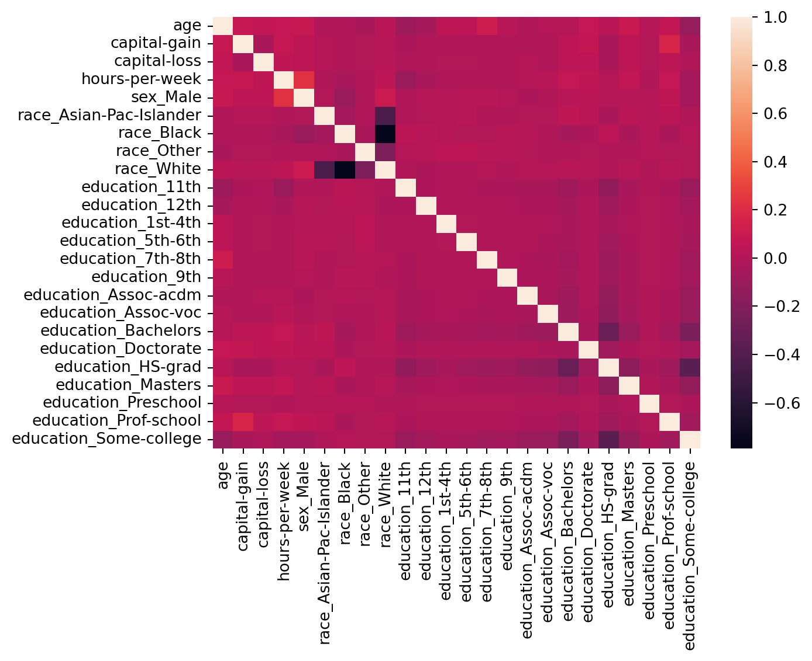

This is based off of a machine learning data science project on logistic regression from Codecademy. Here we examine income class and develop a machine learning model to predict if an individual’s income exceeds $50,000. This based off 1994 Census data from UCI’s database: https://archive.ics.uci.edu/dataset/2/adult.
Loading in Data
Code
#a project off codecademy on logistic regression, finding ROC curves# from UCI data archive https://archive.ics.uci.edu/dataset/20/census+incomeimport pandas as pdimport numpy as npfrom sklearn.model_selection import train_test_splitfrom sklearn.linear_model import LogisticRegressionfrom sklearn.metrics import confusion_matrix, classification_report, accuracy_score, precision_score, recall_score, f1_score, roc_curve, roc_auc_scorefrom sklearn.preprocessing import StandardScaler#import codecademylib3import matplotlib.pyplot as pltimport seaborn as snsfrom ucimlrepo import fetch_ucirepo from tabulate import tabulate# fetch dataset census_income = fetch_ucirepo(id=20) # data (as pandas dataframes) X = census_income.data.features y = census_income.data.targets # metadata #print(census_income.metadata) # variable information #print(census_income.variables) y = y.income.str.replace('.','')df = X.join(y)#Clean columns by stripping extra whitespace for columns of type "object"for c in df.select_dtypes(include=['object']).columns: df[c] = df[c].str.strip()print(df.info())#1. Check Class Imbalanceprint(df.income.value_counts())#2. Create feature dataframe X with feature columns and dummy variables for categorical featuresfeature_cols = ['age','capital-gain', 'capital-loss', 'hours-per-week', 'sex','race', 'education']X = pd.get_dummies(df[feature_cols], drop_first=True)
#3. Create a heatmap of X data to see feature correlationsns.heatmap(X.corr())plt.show()plt.clf()

(a) Heatmap of feature correlation
<Figure size 672x480 with 0 Axes>
(b)
Figure 1
Code
#4. Create output variable y which is binary, 0 when income is less than 50k, 1 when it is greater than 50ky = np.where(df['income']=='<=50K', 0, 1)#5a. Split data into a train and test setx_train, x_test, y_train, y_test = train_test_split(X, y, test_size =0.2, random_state =1)#5b. Fit LR model with sklearn on train set, and predicting on the test setlog_reg = LogisticRegression(C=0.05, penalty='l1', solver='liblinear')log_reg.fit(x_train, y_train)y_pred = log_reg.predict(x_test)#6. Print model parameters (intercept and coefficients)print('Model Parameters, Intercept:')print(log_reg.intercept_)print('Model Parameters, Coeff:')print(log_reg.coef_)#model accuracyprint('Accuracy Score on test set:', log_reg.score(x_test, y_test))
Table 1: Model Parameters
Model Parameters, Intercept:
[-5.86098759]
Model Parameters, Coeff:
[[ 3.71729802e-02 3.36277022e-04 6.35128598e-04 3.15805150e-02
1.10877939e+00 0.00000000e+00 -3.38271511e-01 0.00000000e+00
1.38427727e-01 -5.63114071e-01 0.00000000e+00 -2.81604878e-01
-4.69726516e-01 -8.56858153e-01 -6.50432967e-01 7.91836442e-01
7.26630256e-01 1.44443542e+00 2.00558756e+00 1.13074747e-01
1.77265843e+00 0.00000000e+00 1.98957092e+00 5.28814234e-01]]
Accuracy Score on test set: 0.8228068379568021
Confusion Matrix
Code
#7. Evaluate the predictions of the model on the test set. Print the confusion matrix and accuracy score.#'Confusion Matrix on test set:',print(tabulate(confusion_matrix(y_test, y_pred), #headers=['<=50K','>50K']))
Table 2: Confusion Matrix on test set
---- ---
7055 375
1356 983
---- ---
ROC
For a Receiver Operating Characteristic (ROC) plot, Figure 2
Code
# 8.Create new DataFrame of the model coefficients and variable names; sort values based on coefficientcoef_df = pd.DataFrame(zip(X.columns, log_reg.coef_[0]), columns=['vars', 'coef']).sort_values('coef')coef_df = coef_df[coef_df['coef'].abs()>0].sort_values('coef')print(coef_df)#9. barplot of the coefficients sorted in ascending ordersns.barplot(x = coef_df.vars, y = coef_df.coef)plt.xticks(rotation=90)plt.show()plt.clf()#10. Plot the ROC curve and print the AUC value.y_pred_prob = log_reg.predict_proba(x_test)fpr, tpr, _ = roc_curve(y_test, y_pred_prob[:,1])plt.plot(fpr, tpr)plt.plot([0,1],[0,1], linestyle='--')plt.title('ROC Curve')plt.show()plt.clf()